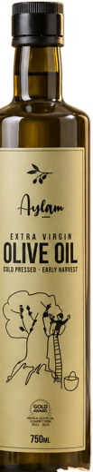
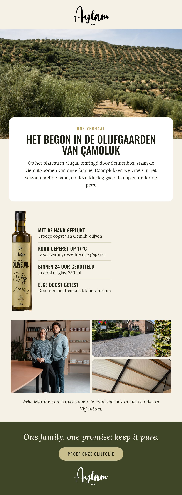
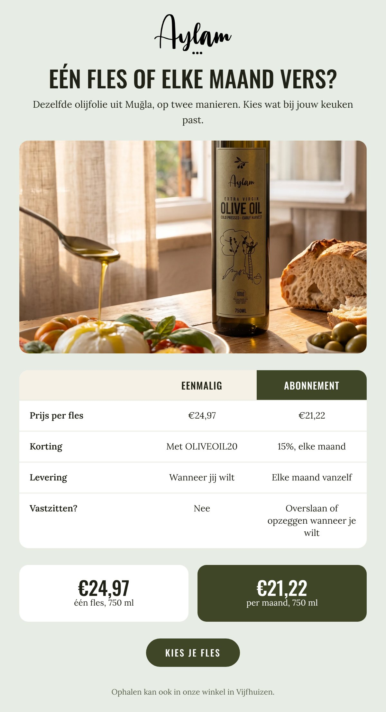

Voorbeelden voor Aylam Farm
Vijf redenen om jullie olijfolie te proeven.
Vijf advertenties en twee nieuwsbrieven, gemaakt met jullie eigen foto's en productinformatie. Een idee van Issey Kooijmans van Digital Essence; niets hiervan is gepubliceerd.
Hoi team Aylam, olijfolie van de eigen bomen van jullie familie in Muğla, dezelfde dag geperst: dat is een verhaal dat op Instagram werkt. Daar heb ik vijf advertenties en twee nieuwsbrieven omheen gemaakt, met jullie eigen foto's. Niets is gepubliceerd. Past het niet, zeg het gerust.
Eerst even uitgelegd
Wat is een invalshoek?
Een invalshoek is de reden waarom iemand iets koopt. Dezelfde fles olijfolie kun je op heel veel manieren verkopen, omdat niet iedereen om dezelfde reden koopt.
Dezelfde fles olijfolie, vijf verschillende redenen om hem te kopen. Elke reden wordt een eigen advertentie.

- 01Waar het vandaan komt"Waar komt deze olijfolie eigenlijk vandaan?"
- 02Probleem → oplossing"Waarom smaakt mijn olijfolie eigenlijk nergens naar?"
- 03Transparantie"Is dit nou echt beter, of zeggen ze dat alleen?"
- 04Bewijs"Wat vinden mensen die hem al gekocht hebben?"
- 05Een goede deal"Kan ik hem een keer voordelig proberen?"
We testen die invalshoeken naast elkaar. Na een paar dagen zie je welke het meest verkoopt. Daar maken we er meer van, en wat niet werkt, gaat eruit.
Zo werk ik
Van eerste blik tot bestelling.
Niet iedereen die een advertentie ziet, is meteen klaar om te kopen. Daarom maak ik voor elke stap andere advertenties. Zo spreek je iedereen aan op het moment waar hij of zij zit.
- Stap 1 · Top of funnel
Kennismaken
Mensen die Aylam Farm nog nooit hebben gezien.
Doel: dat ze stoppen met scrollen en nieuwsgierig worden.
Zoals een etalage: je loopt langs en kijkt even naar binnen.
- Stap 2 · Middle of funnel
Overtuigen
Mensen die jullie al eens zagen, maar nog twijfelen.
Doel: hun vragen beantwoorden. Wat is het, waarom dit en niet iets anders?
Zoals een verkoper die rustig uitlegt wat het verschil is.
- Stap 3 · Bottom of funnel
Kopen
Mensen die bijna willen bestellen.
Doel: het laatste duwtje, zoals een aanbod, reviews of de zekerheid van gratis retour.
Zoals de kassa: duidelijk, makkelijk en zonder risico.
Wat ik zag: in de advertentiebibliotheek van Meta staan nu geen actieve advertenties van Aylam. Jullie hebben wel al sterke laatste duwtjes: de code OLIVEOIL20, 15% korting met een abonnement, en alle 9 reviews op de olijfolie met 5 sterren.
Advertenties · 9:16
Vijf advertenties, verdeeld over de stappen.
Tik op een advertentie om hem groot te bekijken.
Voor mensen die Aylam Farm nog niet kennen.
Voor mensen die jullie kennen, maar nog twijfelen.
Voor wie bijna bestelt.
Waarom advertenties
Zo groeien foodmerken op Instagram.
Goede olijfolie koop je niet na één keer zien. Merken die vaak en met verschillende invalshoeken adverteren, blijven in beeld tot iemand zin heeft om te proberen. Een nieuwsbrief met een abonnement zorgt daarna dat die fles elke maand terugkomt.
Aantal advertenties: Meta Advertentiebibliotheek, 27-11-2026.
Nieuwsbrief 1 van 2 · Merkverhaal
Het begon in de olijfgaarden van Çamoluk.
Een mail die het verhaal van de boomgaard vertelt, met de fles en vier feiten over oogst en persen, en de familie in de winkel in Vijfhuizen.
- Hero met jullie foto van de olijfgaarden
- Fles met vier labels: geplukt, geperst op 17°C, gebotteld, getest
- Ayla, Murat en de winkel in Vijfhuizen, afsluiting met jullie eigen belofte

Nieuwsbrief 2 van 2 · Vergelijking
Eén fles of elke maand vers?
Een mail die eenmalig kopen en het abonnement naast elkaar zet, zodat lezers zelf kiezen. Zo groeit het aantal vaste klanten.
- Jullie eigen foto van de fles op tafel
- Tabel eenmalig €24,97 tegenover abonnement €21,22
- Overslaan of opzeggen wanneer je wilt, ophalen in Vijfhuizen

Ritme
Zo kan een week eruitzien.
Dit is een voorbeeld, geen vast pakket. De kracht zit in het ritme: regelmatig nieuwe invalshoeken testen in elke stap, en je nieuwsbrief vast versturen. Wat werkt, doen we vaker.
- MaNieuwe advertenties liveNieuwe invalshoeken in elke stap tegelijk testen.
- DiMeekijkenWelke invalshoek pakt de doelgroep op?
- WoBijsturenBudget naar wat werkt, de rest eruit.
- DoNieuwsbrief verstuurdVast moment, zodat lezers erop gaan rekenen.
- VrKorte updateWat werkte en wat we volgende week doen.
Benieuwd hoe dit voor Aylam Farm werkt?
Een kwartiertje bellen is genoeg om te kijken of het past. Geen verplichtingen.